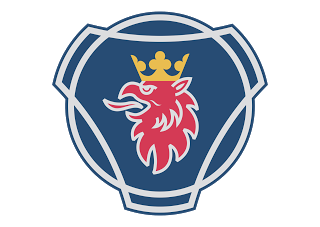
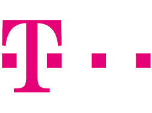
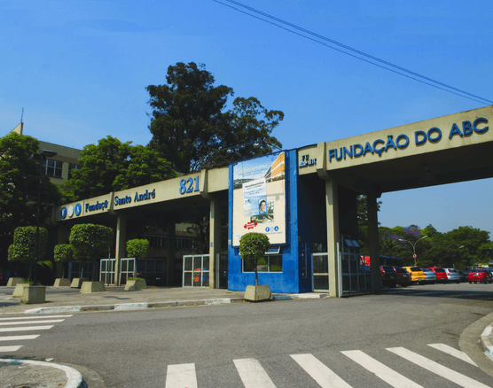

Seja bem vindo ao meu site!
Formado em engenharia de computação, procurando uma realocação para a área de desenvolvimento MEAN Stack (MongoDB + Express + Angular + Node.js).
Experiência profissional

Fui capaz de gerenciar as máquinas virtuais que sustentavam o ambiente on-premisse da Scania Latin America, e tive a chance de participar de uma migração de versão do vCenter com o auxilio de uma consultoria.
Scania
Estagiário em Infraestrutura (Virtualização)Fui capaz de gerenciar as máquinas virtuais que sustentavam o ambiente on-premisse da Scania Latin America, e tive a chance de participar de uma migração de versão do vCenter com o auxilio de uma consultoria.
-
•Business Continuous Planning (I.R.P e A.R.P também)
-
•Utilização de metodologias ágeis e capacitação como DevOps
-
•Criação de máquinas virtuais Linux e Windows.
-
•Configuração de vLan e vSwitch via comandos de ESXi
-
•Manutenção física e configuração de host, acesso remoto.
-
•Elaboração de documentos e projetos para entrega de relatório periódico sobre o ambiente de Infra e
sugestões
de melhoria.

Parte de um time que funcionava 24/7 as atividades eram prover suporte técnico de 2º nível para o software de PLM da Daimler AG seguindo os processos ITIL. Dentro desse grupo as atividades eram:
T-Systems do Brasil
Estagiário em Gerenciamento do Ciclo de Vida do ProdutoParte de um time que funcionava 24/7 as atividades eram prover suporte técnico de 2º nível para o software de PLM da Daimler AG seguindo os processos ITIL. Dentro desse grupo as atividades eram:
-
•Resolver ou direcionar os tickets para o grupo correto.
-
•Utilizar ferramentas de monitoramento preventivo.
-
•Limpar diretórios, fechar processos travados, checar e zipar arquivos antigos relativos ao software de
PLM
(sempre utilizando um terminal Linux).
-
•Atender chamados e coletar a posição de colaboradores globais (Alemanha) sobre problemas.
-
•Comunicar com meu grupo em ordem de providenciar a melhor resposta possível e alcançar excelência no
serviço ao
cliente.

Fundação Santo André
Engenharia de Computação
-
A Fundação Santo André, instituição de caráter público e de direito privado, foi criada em 1962. No
final dos anos 90, iniciou-se a transformação das faculdades isoladas, Faculdade de Filosofia e
Faculdade de Economia, em Centro Universitário, ocasião em que a terceira faculdade foi criada, a
Faculdade de Engenharia Celso Daniel.
-
Atualmente, a Fundação Santo André é mantenedora do Centro Universitário, que abriga as três faculdades e o
colégio.
-
O curso de Engenharia de Computação forma profissionais capazes de desenvolver softwares, dimensionar
infraestruturas de tecnologia da informação ou de interligação do computador com o ambiente ao seu redor,
proporcionando soluções customizadas de acordo com a necessidade do cliente.